+->Foreigners visiting India<-+
We know that India is known to have the highest population, production of textiles and spices, languages per state, and of course many visitors from foreign countries. In the history of India, foreigners first came to India in multiple waves, including ancient invaders, travellers, and European explorers.
But let us know why, when and how did they come to India.
----------------------------------------------------------------------------------------------------------------------------->GREECE<----------------------------------------------------------------------------------------------------------------------------

- Ancient Greeks travelled to India as early as the 6th century BC, and their presence continued until the 5th century AD.
- They came to India for trade, conquest and cultural exchange. The Greeks traded with India for silk, spices, gold, and other luxury goods.,/li>
- In return, they exported manufactured goods like cloth, wine, olive oil, and metal weapons.
- The trade route between the two regions became known as the Silk Road. The Greeks invaded South Asia multiple times, including the Indus, Ganges (Ganga), Deccan Plateaus, and Gujarat beaches.
- Alexander the Great's conquest of the Persian Empire in the 4th century BC led to the Greeks' initial presence in the Indian subcontinent.
- The Greeks introduced their writing, coinage, architecture, and sculptural forms to India. In turn, Greek craftsmen learned to work with new materials like stucco and ivory.
The arrival of earlier Greeks in India took place approximately two centuries before Alexander came to India. Their route of travel remained along the trade routes linking India, Persia, and Ionian cities of Asia Minor.
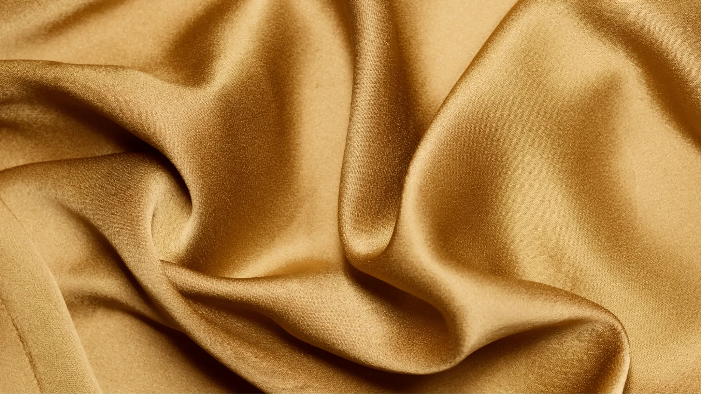
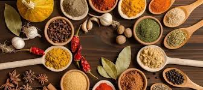
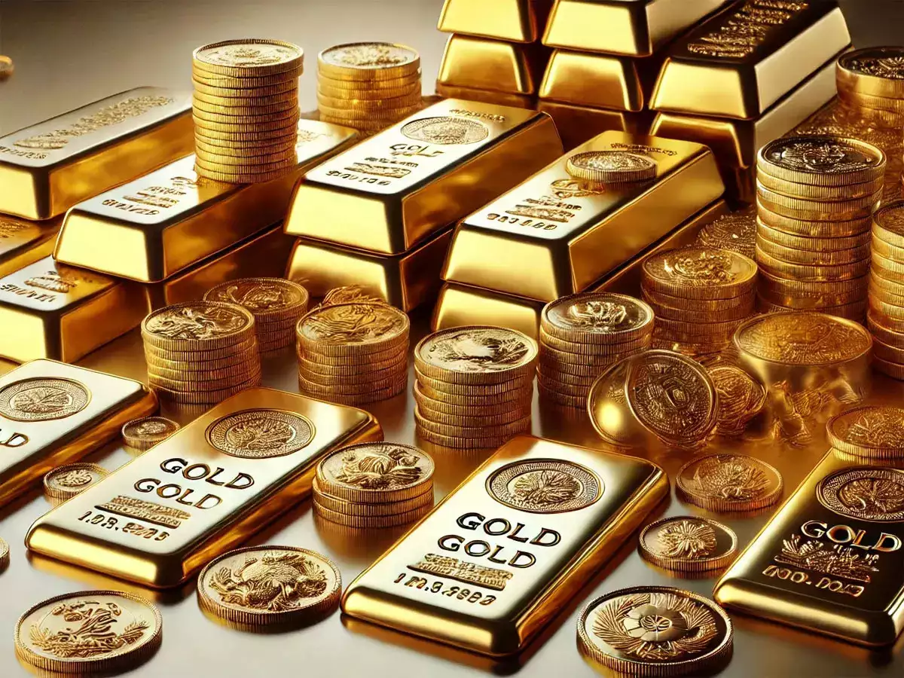

------------------------------------------------------------------------------------------------------------------------>CHINA<-----------------------------------------------------------------------------------------------------------------------

- Chinese people have been travelling to India since at least the 2nd century B.C., with the first recorded visit being by the monk Faxian in 402 AD.
- The Chinese pilgrims came to India to visit places associated with the life and teachings of the Buddha as well as famous monasteries.
- China had also invaded India in 1962 over a dispute.
- Through the Silk Road, China is also the biggest trading partner of India. China imports from India include salt, sulphur, earth, stone, plaster, lime, cement, silk, cotton, spices in return of electronics, machinery, chemicals and plastics.
- Aksai Chin, claimed by India to belong to Ladakh and by China to be part of Xinjiang, contains an important road link that connects the Chinese regions of Tibet and Xinjiang.
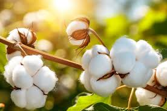
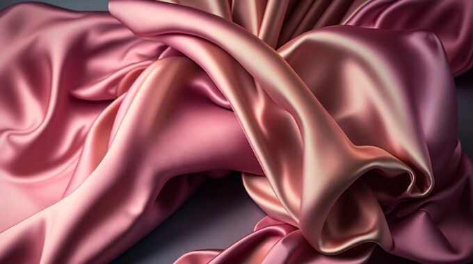
 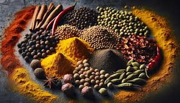
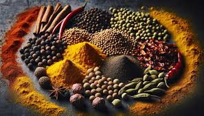

--------------------------------------------------------------------------------------------------------------------->PERSIA (IRAN)<----------------------------------------------------------------------------------------------------------------
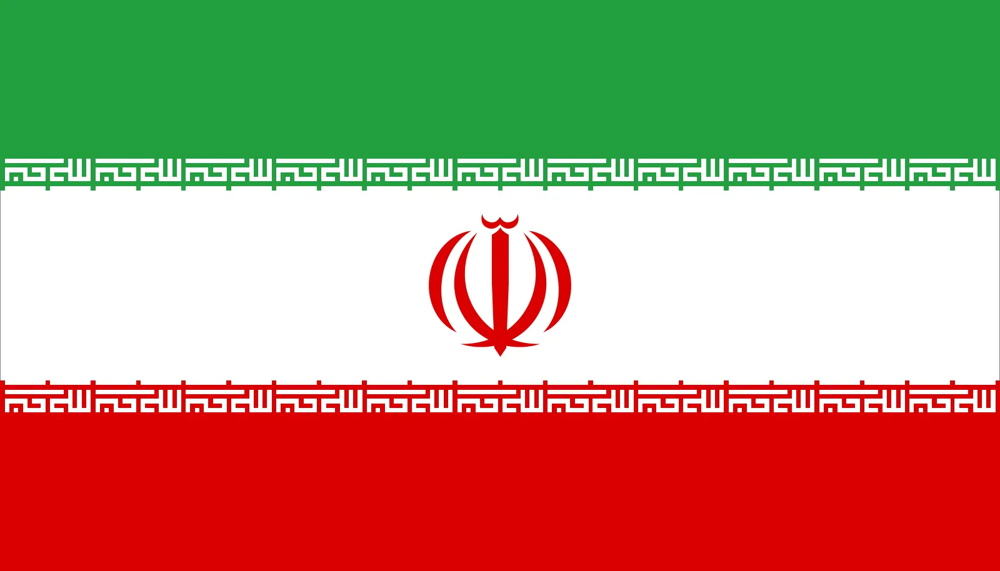
- The Persians were the first foreigners to mention India, referring to the region as "Hindustan".
- Persians have traveled to India for a variety of reasons, including religious persecution, trade, and to conquer the country. Many Persians fled to India to escape religious persecution by Muslims, especially during the post-Sasanian period, the Safavid conversion of Iran to Shia Islam, and the reign of the Qajar dynasty.
- The Persians invaded India for a variety of reasons, including the country's wealth, fertile land, and lack of unity among Indian kings and believed that conquering it would extend the Eastern boundary of the world.
- Persia traded a variety of goods with India including textiles like cotton indigo and silk, metals, agricultural products like nuts dates saffron, precious stones and pearls, plastic, articles, glassware and leather products. The Persians used the seas between the Near East and India for trade.
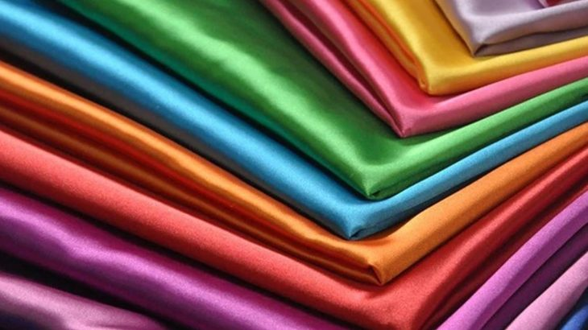
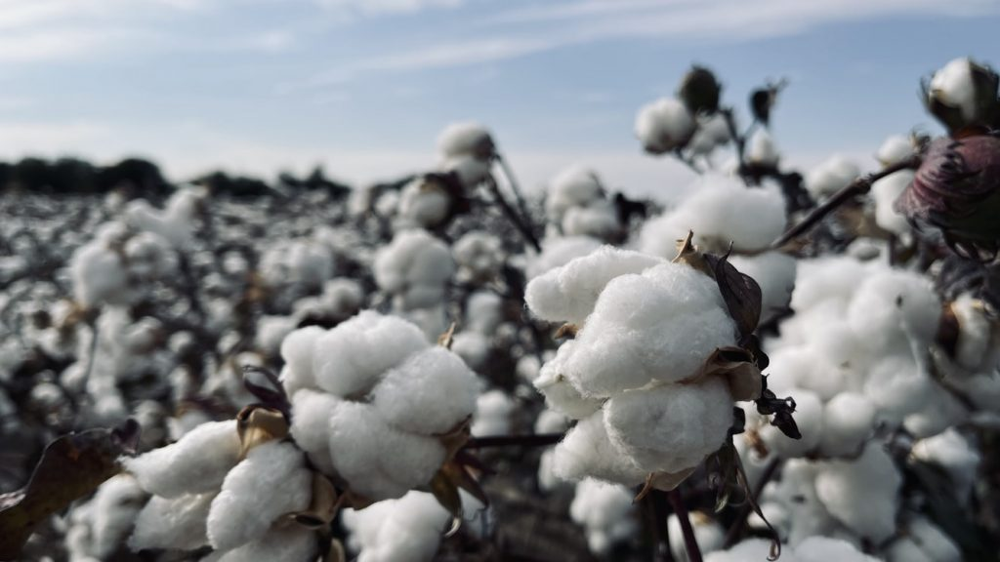


---------------------------------------------------------------------------------------------------------------------->PORTUGAL<----------------------------------------------------------------------------------------------------------------------

- The Portuguese were the first European people to come to India in 1498 and ruled over India from 1505 to 1961.
- They came to India for motives like Religious motives where Portuguese wanted to spread Christianity in Asia and Economic motives where they wanted to bypass Arabs and Turks and establish a direct trade route to India.
- They came to India for more reasons including spice trade monopoly, cost savings and dismantle the Arab and Italian monopoly.
- Most of the trades included textiles, chemical products, metals, marine products, cotton, leather, coffee, tea and spice.
- The Portuguese discovery of the sea route to India was the first recorded trip directly from Europe to the Indian subcontinent, via the Cape of Good Hope.


------------------------------------------------------------------------------------------------------------->ENGLAND (Great Britain)<-----------------------------------------------------------------------------------------------------
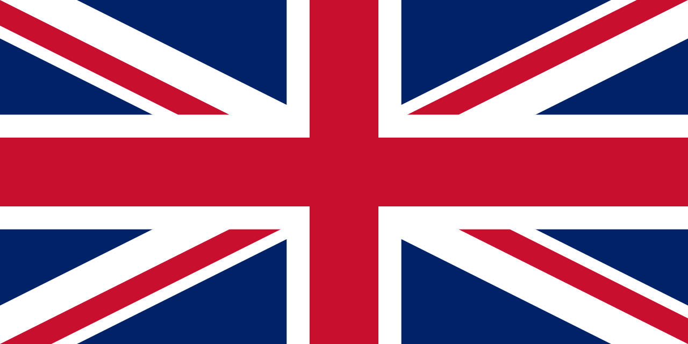
- The British came to India in 1608 primarily for trade, but also to establish colonies and spread Christianity.
- The British travelled to India by sailing the Cape Route, a sea route that passed by the Cape of Good Hope and Cape Agulhas in Africa.
- The British East India Company (EIC) first came to India as traders of spices, silk, cotton, indigo, dye, tea, and opium.
- The British eventually colonized India and ruled it for almost two centuries.
- Mughal Emperor Jahangir permitted the English East India Company to establish its factory in 1613 at Surat, the British believed India was a valuable part of their empire and that the wealth extracted from the region made Britain prosperous and also chose India for trading as they needed a market to dump the Surplus in a market apart from their own country.
- The British rule had forbidden India to compete or trade with other countries because they wanted to gain profit from exports and gain monopoly on India's market which drained the economic status of India significantly.
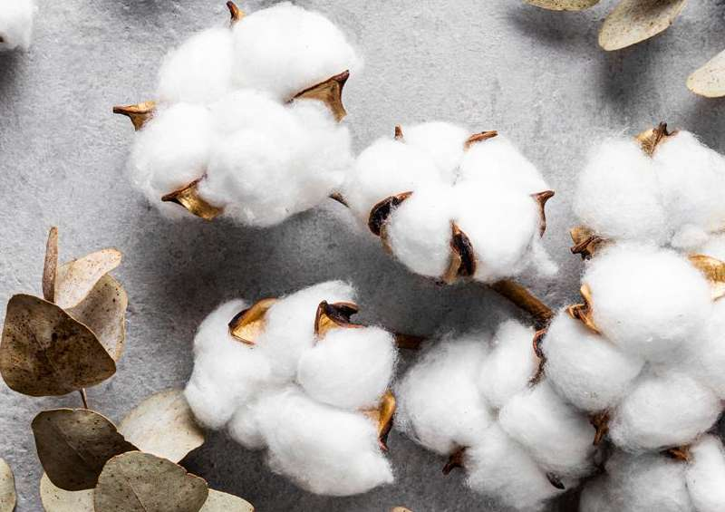
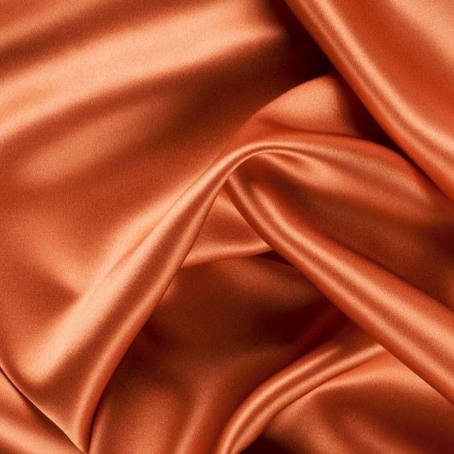
 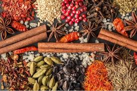
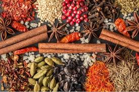

--------------------------------------------------------------------------------------------------------------------->FRANCE<---------------------------------------------------------------------------------------------------------------------

- The French came to India for trade in the 16th century, and later to establish a colony.
- The French East India Company was established in 1664 to trade in India and other Asian lands.
- They traded indigo, dye, cotton, silk, and spices. The French established trading posts in India, including Surat, Masulipatam, Chandernagore, and Pondicherry.
- The French faced competition from other European trading companies, especially the British East India Company. The Battle of Wandiwash between the French and the British caused the French East India Company to lose control of India.
- The French came to India by sea, using the European-Asian sea route, also known as the Cape Route.
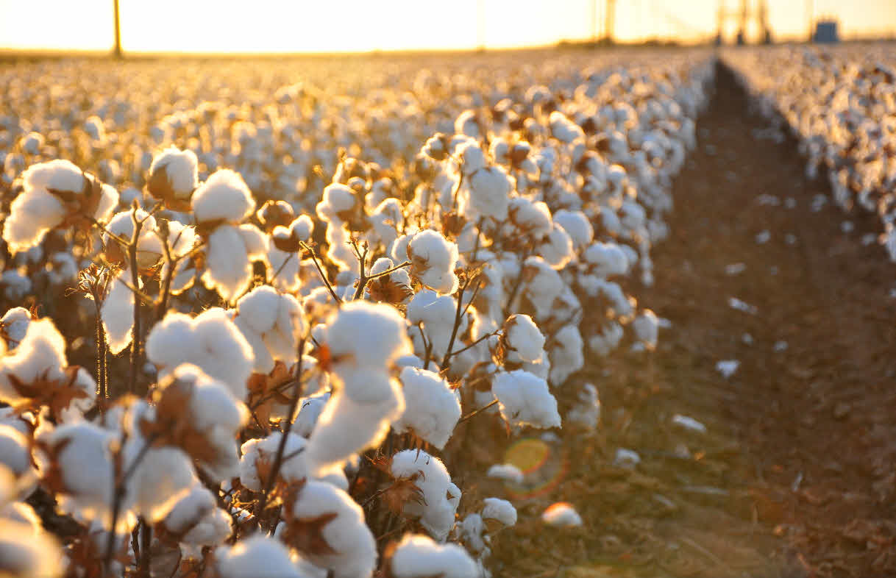
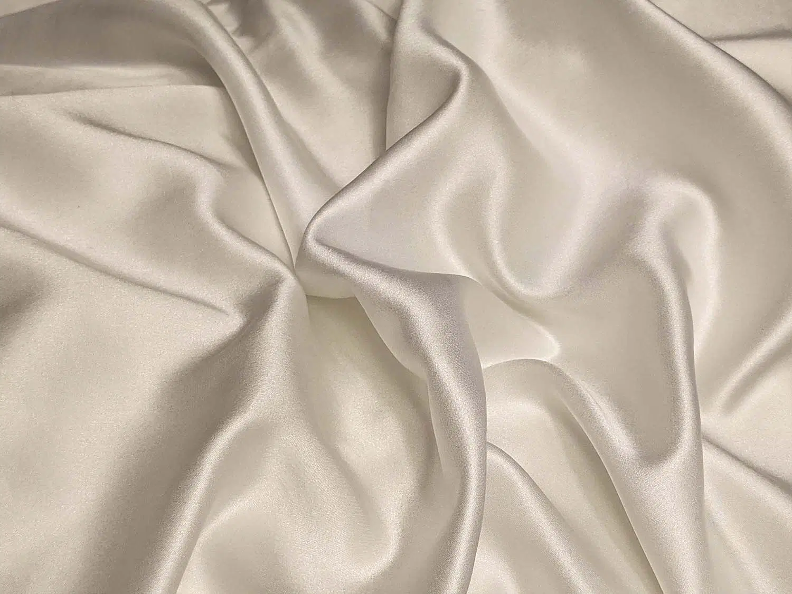
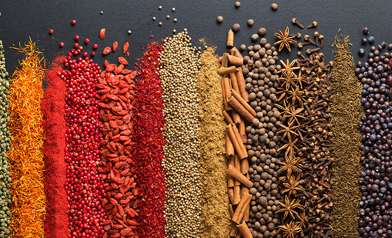

----------------------------------------------------------------------------------------------------------------------------------------------------------------------------------------------------------------------------------------------------------------------------
As you may have noticed, many foreign countries came to India with an intention of trading. India before the British rule, was rich in industrial, metal, art, and spice products. It had a high economic status too back then, so foreign countries seeing this, would often come to the country to trade or conquest. Many European countries use the cape route to come to India, the Cape Route is a long detour around the southern tip of Africa, passing through the Cape of Good Hope and Cape Agulhas.